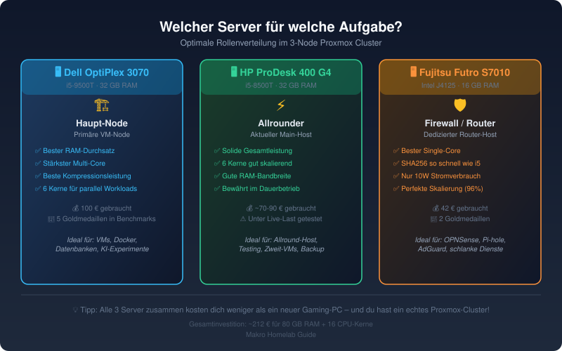
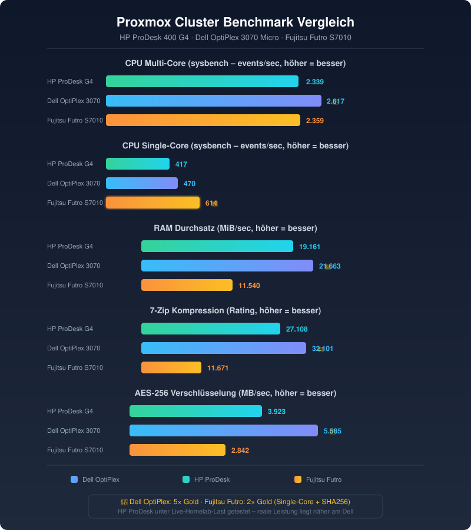

Aktualisiert: Juni 2026 | Lesezeit: 8 Minuten
Du möchtest dein Homelab auf das nächste Level bringen und mehrere Server zu einem Proxmox-Cluster verbinden? Oder du stehst gerade am Anfang und fragst dich, ob ein einzelner Mini-PC reicht – oder ob du lieber gleich mehrere gebrauchte kaufen solltest?
In diesem Artikel habe ich drei meiner eigenen Proxmox-Server einem ausführlichen Benchmark-Test unterzogen: einen HP ProDesk 600 G4 Mini, einen Dell OptiPlex 3070 Micro und einen Fujitsu Futro S7010. Die Ergebnisse zeigen dir, welcher Server sich für welche Aufgabe am besten eignet.

Warum überhaupt mehrere Server? Ein Beispiel aus dem Alltag
Stell dir vor: Du bist unterwegs und willst mit dem Handy schnell auf deine Fotos, Dokumente oder Filme auf deinem Heim-NAS zugreifen. Dein Homeserver läuft 24/7 – aber wenn du ein Update machst, ein Container abstürzt oder du dein Netzwerk neu konfigurieren musst, bist du ohne Alternative komplett offline.
Mit drei Servern im Cluster hast du diese Probleme nicht:
- Fällt ein Server aus, laufen die anderen Dienste einfach weiter
- Für Wartungsarbeiten migrierst du VMs live auf einen anderen Node – ohne Ausfallzeit
- Du kannst verschiedene Aufgaben auf die passende Hardware verteilen
- Du lernst dabei echte Cluster-Technologie, wie sie auch in Unternehmen eingesetzt wird
Ein Proxmox-Cluster ist wie eine Wohngemeinschaft für deine Server: Jeder hat seine eigene Stärke, aber zusammen sind sie mehr als die Summe ihrer Teile.
Die 3 Kandidaten – Gebrauchte Mini-PCs aus dem Jahr 2026
Alle drei Server sind gebrauchte Business-Mini-PCs, die ursprünglich mehrere hundert Euro gekostet haben und heute für kleines Geld auf dem Gebrauchtmarkt zu haben sind.
Wichtig zu den Preisen: Die angegebenen Preise beziehen sich auf die Geräte mit nachgerüstetem RAM und SSD. Gerade DDR4-RAM ist derzeit leider sehr teuer – kalkuliere entsprechend ein, wenn du ein günstiges Basismodell ohne RAM kaufst.
1. HP ProDesk 600 G4 Mini (der Allrounder)
Der HP ProDesk 600 G4 Mini war mein erster Proxmox-Host und läuft seit Monaten zuverlässig im Dauerbetrieb.
| Komponente | Details |
|---|---|
| CPU | Intel Core i5-8500T (6 Kerne/6 Threads, 2,1–3,5 GHz, 35W TDP) |
| RAM | 32 GB DDR4 (nachgerüstet) |
| Preis komplett | ~120–150 € (mit 2×8 GB RAM + 256 GB NVMe) |
| Status | Live-Homelab-Host (unter Last getestet) |
👉 HP ProDesk 600 G4 Mini bei Amazon suchen
2. Dell OptiPlex 3070 Micro (der Leistungsträger)
Der Dell OptiPlex 3070 Micro ist mein neuester Zugang und soll die Haupt-VM-Last übernehmen.
| Komponente | Details |
|---|---|
| CPU | Intel Core i5-9500T (6 Kerne/6 Threads, 2,2–3,7 GHz, 35W TDP) |
| RAM | 32 GB DDR4 (nachgerüstet) |
| Preis komplett | ~120–150 € (mit 2×8 GB RAM + 256 GB NVMe) |
| Status | Frisch eingerichtet (unbelastet getestet) |
👉 Dell OptiPlex 3070 Micro bei Amazon suchen
3. Fujitsu Futro S7010 (der Sparmeister)
Der Fujitsu Futro S7010 ist der Überraschungsgast – ein winziger, extrem stromsparender Mini-PC, der eigentlich als Thin Client gedacht war.
Einsteiger-Tipp: Der Futro S7010 wird meist mit 4 oder 8 GB RAM verkauft. 4 GB sind etwas dünn, mit 8 GB kann man schon was anfangen. Der interne Speicher sollte nicht als Hauptdatenträger genutzt werden – rüste eine kleine 64 GB M.2 SATA SSD nach (wie ich es gemacht habe). Das reicht für den Anfang völlig aus und kostet kaum Aufpreis.
| Komponente | Details |
|---|---|
| CPU | Intel Celeron J4125 (4 Kerne/4 Threads, 2,0–2,7 GHz, 10W TDP) |
| RAM | 8 GB DDR4 (offiziell max. 8 GB; 16 GB wurden von Nutzern getestet) |
| SSD | 64 GB M.2 SATA (nachgerüstet) |
| Preis komplett | ~42 € (mit 8 GB RAM + 64 GB SSD) |
| Status | Soll OPNsense-Firewall + Pi-hole/AdGuard werden |
👉 Fujitsu Futro S7010 bei Amazon suchen
Gesamtkosten aller drei Server: ~300–350 € – du bekommst ein komplettes Proxmox-Cluster mit 72 GB RAM und 16 CPU-Kernen. 🎉
Die Benchmarks – Was wurde getestet und warum?
Ich habe vier verschiedene Benchmarks durchgeführt, um ein möglichst vollständiges Bild der Leistungsfähigkeit zu bekommen:
| Benchmark | Testet | Warum wichtig? |
|---|---|---|
| sysbench CPU | Reine Rechenleistung (Prime-Zahlen) | Zeigt, wie schnell VMs/Container arbeiten |
| sysbench RAM | Speicher-Durchsatz | Wichtig für datenbank-lastige Anwendungen |
| 7-Zip Benchmark | Echte Kompression/Dekompression | Realwelt-Test: Backup, Datenübertragung |
| OpenSSL Speed | Verschlüsselung (AES, SHA) | Entscheidend für VPN, HTTPS, verschlüsselte Verbindungen |
Alle Tests liefen auf nacktem Proxmox VE (also ohne laufende VMs/Container) – bis auf den HP ProDesk, der während des laufenden Homelab-Betriebs getestet wurde. Das macht die Ergebnisse besonders realistisch!
Die Ergebnisse im Detail
Hier siehst du alle Benchmark-Ergebnisse auf einen Blick:

Ergebnisse als Tabelle
| Benchmark | HP ProDesk 600 G4 | Dell OptiPlex 3070 | Fujitsu Futro S7010 |
|---|---|---|---|
| CPU Multi-Core (events/s) | 2.339 | 2.617 | 2.359 |
| CPU Single-Core (events/s) | 417 | 470 | 614 |
| RAM-Durchsatz (MiB/s) | 19.161 | 21.663 | 11.540 |
| 7-Zip Kompression (Rating) | 27.108 | 32.101 | 11.671 |
| AES-256 (MB/s) | 3.923 | 5.585 | 2.842 |
| SHA256 (MB/s) | 1.800 | 2.500 | 2.500 |
Erklärungen:
CPU Multi-Core: Der Dell liegt mit 2.617 events/s vorne – 12 % mehr als der HP (2.339) und 11 % mehr als der Futro (2.359). Beide i5 haben 6 Kerne ohne Hyperthreading, der Futro nur 4. Dass der Futro trotzdem mit dem HP mithält, liegt daran, dass der HP unter Live-Last getestet wurde.
CPU Single-Core: Die größte Überraschung! Der Futro S7010 erreicht 614 events/s – 30 % mehr als der Dell (470) und 47 % mehr als der HP (417). Grund: Der Celeron J4125 mit nur 10W TDP läuft dauerhaft auf Takt, während die 35W-i5 unter Last runterregeln müssen.
RAM-Durchsatz: Der Dell schafft 21.663 MiB/s – fast doppelt so viel wie der Futro (11.540 MiB/s). Wichtig für viele parallele VMs und Datenbanken.
7-Zip Kompression: Der Dell (32.101 Rating) ist 19 % schneller als der HP und 175 % schneller als der Futro. Relevant für Backups und Dateiübertragungen.
AES-256 Verschlüsselung: Der Dell (5.585 MB/s) ist am schnellsten. Der Futro (2.842 MB/s) liegt trotzdem weit über dem Gigabit-Internet-Durchsatz (125 MB/s) – völlig ausreichend für VPN.
SHA256: Futro und Dell liegen gleichauf (~2.500 MB/s), da beide SHA-NI-Befehle direkt im Chip unterstützen.
Was bedeuten die Ergebnisse für dein Homelab?
Die drei Server haben ganz unterschiedliche Stärken – und genau das macht ein Cluster so wertvoll:
Die optimale Rollenverteilung
| Server | Rolle | Warum? |
|---|---|---|
| 🖥️ Dell OptiPlex 3070 | Haupt-Node | Bester RAM-Durchsatz + Multi-Core – ideal für schwere VMs, Docker, Datenbanken |
| 🖥️ HP ProDesk 600 G4 | Zweit-Node / Backup | Solide Allround-Leistung, bewährt im Dauerbetrieb |
| 🖥️ Fujitsu Futro S7010 | Firewall / Home Assistant | Single-Core-Stärke und niedriger Stromverbrauch – perfekt für 24/7-Dienste |
Häufig gestellte Fragen (FAQ)
Brauche ich wirklich 3 Server? Reicht nicht einer?
Ein einziger Server reicht für den Einstieg völlig aus! Ein HP ProDesk 600 G4 Mini für ~100–120 € (mit RAM + SSD) ist eine perfekte Basis. Wenn du dann merkst, dass dir Leistung fehlt, kaufst du einen zweiten dazu. Das Schöne an Proxmox: du kannst dein Cluster beliebig erweitern.
Kann ich auch verschiedene CPU-Typen mischen?
Ja! Proxmox-Cluster funktionieren mit unterschiedlicher Hardware – das ist kein Problem. Du solltest nur bei Live-Migration aufpassen: Die CPUs sollten ähnlich genug sein (beide Intel, gleiche Generation), sonst musst du die Migration vorher planen.
Was kostet mich der Betrieb (Strom)?
- Futro S7010: ~10 Watt → ~2 €/Monat (Dauerbetrieb)
- HP ProDesk: ~15–25 Watt → ~3–5 €/Monat
- Dell OptiPlex: ~15–25 Watt → ~3–5 €/Monat
- Gesamt: ~8–12 €/Monat für 3 Server im 24/7-Betrieb
Das ist weniger als ein Streaming-Abo. 😉
Ist das schwer einzurichten?
Die Grundinstallation von Proxmox dauert ~15 Minuten pro Server. Einen Cluster aus 3 Nodes einzurichten ist danach eine Sache von 30 Minuten über die Weboberfläche. Für den Einstieg reichen grundlegende Linux-Kenntnisse – und die lernst du schnell dazu.
Welche Hardware empfehle ich für dein Homelab?
Je nach Budget und Zielsetzung:
Einsteiger (bis 150 €) – 👉 HP ProDesk 600 G4 Mini bei Amazon suchen (~100–120 € mit RAM + SSD) Perfekt für erste Proxmox-Erfahrungen, läuft leise und zuverlässig. RAM und SSD selbst nachrüsten.
Fortgeschritten (100–200 €) – 👉 Dell OptiPlex 3070 Micro bei Amazon suchen (~100 € ohne RAM/SSD) Der Leistungsträger – bester RAM-Durchsatz und Multi-Core für deine VMs.
Low-Budget-Spezial (unter 50 €) – 👉 Fujitsu Futro S7010 bei Amazon suchen (~42 € mit RAM + SSD) Der 10W-Dauerläufer für Home Assistant, Pi-hole, AdGuard, Firewall – stromsparend und überraschend stark im Single-Core.
Fazit: 3 gebrauchte Mini-PCs schlagen einen neuen Server
Die Benchmark-Ergebnisse zeigen deutlich: Jeder der drei Server hat seine eigene Stärke.
- Der Dell OptiPlex 3070 ist der Leistungssieger – perfekt für schwere VMs, Datenbanken und Docker-Workloads
- Der Fujitsu Futro S7010 ist der Überraschungssieger – mit nur 42 € und 10 Watt Stromverbrauch die perfekte Firewall oder Home-Automation-Zentrale
- Der HP ProDesk 600 G4 ist der bewährte Allrounder – und das unter Dauerlast im Live-Betrieb
Zusammen kosten sie rund 300–350 Euro und ersetzen einen Neu-Server für das Mehrfache. Du bekommst:
✅ 16 CPU-Kerne für parallele Workloads
✅ 72 GB RAM für viele gleichzeitige VMs
✅ Echtes Proxmox-Cluster mit Live-Migration und Hochverfügbarkeit
✅ Redundanz – fällt einer aus, laufen die anderen weiter
Meine Empfehlung: Fang mit einem Server an (z.B. HP ProDesk 600 G4 für ~100 € Basis + selbst nachgerüstetem RAM) und bau dein Cluster nach und nach aus. Der Fujitsu Futro für 42 € ist ein No-Brainer – den kannst du auch als Home Assistant für Heim-Automation oder AdGuard/Pi-hole nebenher laufen lassen, während er kaum Strom zieht.
Weiterführende Artikel
- 🔗 Virtualisierung kostenlos 2026: Proxmox VE als VMware-Alternative — Warum Proxmox die beste kostenlose Virtualisierungsplattform ist
- 🔗 Mini PC fürs Homelab nach Budget: Von 40€ bis 300€ — Welcher Mini-PC passt zu deinem Budget?
Als Amazon-Partner verdiene ich an qualifizierten Verkäufen.